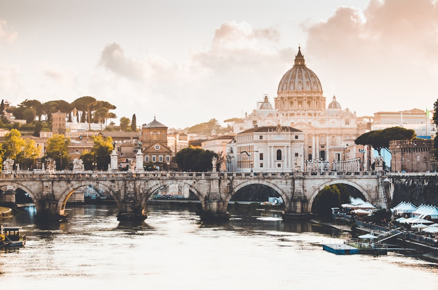
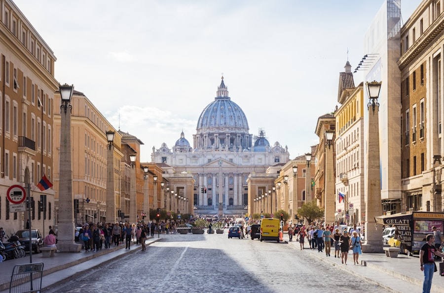
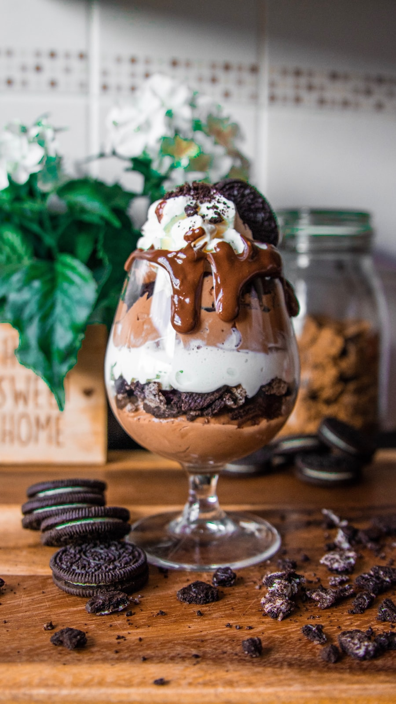

⏱ מהמלון ~8–12 דק׳ הליכה
מזרקת טרווי
מזרקת הבארוק המפורסמת ביותר ברומא (המאה ה־18). זורקים מטבע עם הגב למזרקה — מסורת ל״חזרה לרומא״. בערב מוארת ויפה במיוחד.
עמוס בתיירים — עצירה קצרה לצילום מספיקה.
מדריך החופשה · רומא · Legend of the Seas · 14–25 בספטמבר 2026
שני · נחיתה FCO 12:45 · Colonna Collection

מזרקת הבארוק המפורסמת ביותר ברומא (המאה ה־18). זורקים מטבע עם הגב למזרקה — מסורת ל״חזרה לרומא״. בערב מוארת ויפה במיוחד.
עמוס בתיירים — עצירה קצרה לצילום מספיקה.

מקדש רומי עתיק שהפך לכנסייה, עם כיפה מרהיבה ו״אוקולוס״ פתוח לשמיים. המלון שלכם במרחק דקות הליכה.
הכניסה חינמית בדרך כלל — תור קצר אפשרי.

גלידה איטלקית (gelato) — חלק מחוויית רומא. ליד המלון: Giolitti או Della Palma.
אפשר לקחת לדרך אם יש תור.
לבקש תמיד: בלי חזיר / בלי פירות ים · דגים בסדר. מומלץ לשריין בטלפון/אפליקציה.
| אפשרות | זמן משוער | עלות |
|---|---|---|
| העברה פרטית מראש | 45–60 דק׳ | €55–80 |
| מונית רשמית FCO (תעריף קבוע) | 45–60 דק׳ | ~€50–55 |
| Leonardo Express + מונית | 70–90 דק׳ | ~€60+ |
פירוט לכל היעדים: עמוד מוניות בטוחות
| אפשרות | מה כולל | עלות משוערת ליום (משפחה ×4) |
|---|---|---|
| A ★ | מלון → טרווי (מבחוץ) → גלידה → ארוחה מוקדמת ליד המלון | €100–180 (ארוחה + גלידה) |
| B | מלון → קניות קלות ב-Via del Corso → שינה מוקדמת | €40–120 (קניות/חטיפים לפי בחירה) |
| C | לדחוף לקולוסיאום באותו יום | €120–200 (מונית + כרטיסים + אוכל קל) |
מחירים משוערים באירו ליום שלם למשפחה — לא כוללים טיסות/מלון/חבילת השייט עצמה, אלא מה שמשלמים באותו יום לפי האפשרות. לעדכון לפני הנסיעה.